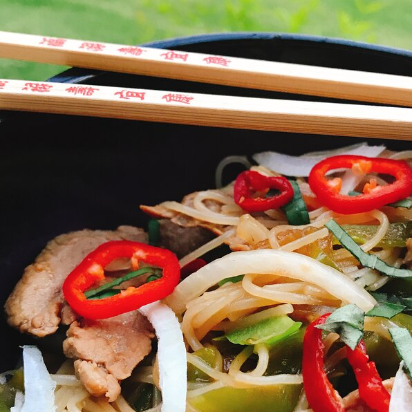

Pad Thai

Description
A spicy Thai pork dish
Ingredients
- 3 tablespoons vegetable oil
- 3 cloves garlic, chopped
- 3 large hot chile peppers, thinly sliced
- 1 ½ cups sliced pork
- 1 tablespoon dark soy sauce
- 1 tablespoon sweet soy sauce
- 4 tablespoons fish sauce
- 1 tablespoon chile paste in soybean oil
- 1 ½ cups sliced white onion
- ½ cup sliced green bell pepper
- 1 cup Thai basil leaves
- 1 teaspoon ground white pepper
Steps
- Heat oil in a wok over high heat. Add garlic and chile peppers and cook until garlic starts to brown, about 30 seconds. Add pork and stir-fry until browned, about 3 minutes. Pour in dark soy sauce, sweet soy sauce, and fish sauce. Cook and stir until liquid has reduced by half, about 3 minutes.
- Add chile paste, onion, and bell pepper. Stir-fry until pork is cooked through, 5 to 6 minutes. Stir in basil leaves and season with pepper. Stir until well combined.